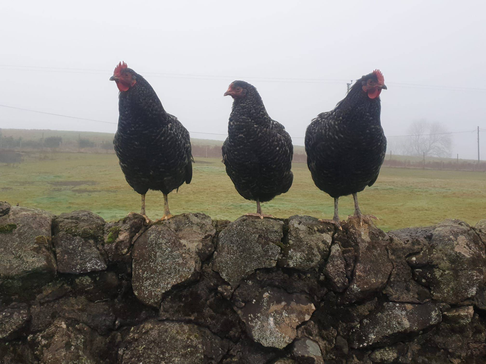
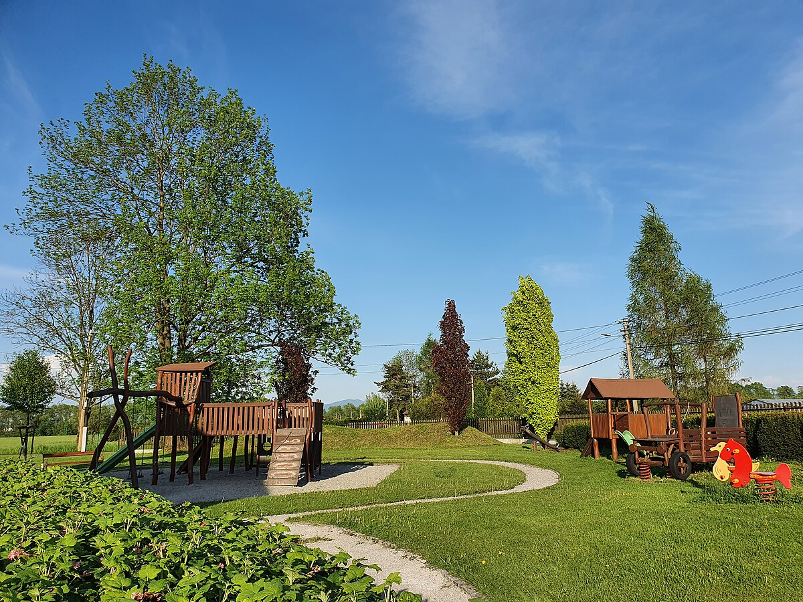

Our Services
We invite you to our amazing farm cafe, where the beauty of the countryside meets fresh, farm-to-table goodness. Enjoy hearty meals made with ingredients straight from our fields, alongside delicious homemade drinks and baked goods. Whether you're here to unwind with nature, savor seasonal flavors, or experience farm life, our cafe is the perfect place to connect with the land and indulge in simple, wholesome goodness. Come visit us, and taste the farm-fresh difference!
We invite you to our charming petting zoo, where fun and friends await! Come and enjoy the joy of interacting with our adorable animals, from gentle goats to playful rabbits. Whether you're here to make memories with the kids, learn about farm life, or just have a relaxing time surrounded by nature, our petting zoo offers a hands-on experience like no other. Bring your family and friends for a day of smiles, laughter, and unforgettable moments with our friendly animals!
Our farm shop is a true treasure, offering the best of local, fresh produce and handmade goods. Whether you're local, a garden enthusiast, or a traveler passing through, you'll find something special here. From homegrown fruits and vegetables to unique jams, cheeses, and artisanal gifts, every item reflects the care and craftsmanship of our farm. It's the perfect stop for stocking up on fresh ingredients or finding a memorable, locally-made gift. Come explore and take a little piece of the farm home with you!
Visit our fun-filled play park, where kids can enjoy swings, slides, and climbing frames in a safe, natural setting. Perfect for families or travelers looking for a relaxing stop, it's the ideal place for outdoor adventure and making memories. Bring the whole family and let the fun begin!
Take a stroll through our scenic walking trails, where nature's beauty surrounds you. Perfect for families, garden enthusiasts, or travelers looking for a peaceful escape, our paths offer the perfect spot to unwind and enjoy the outdoors. Come explore and reconnect with nature!